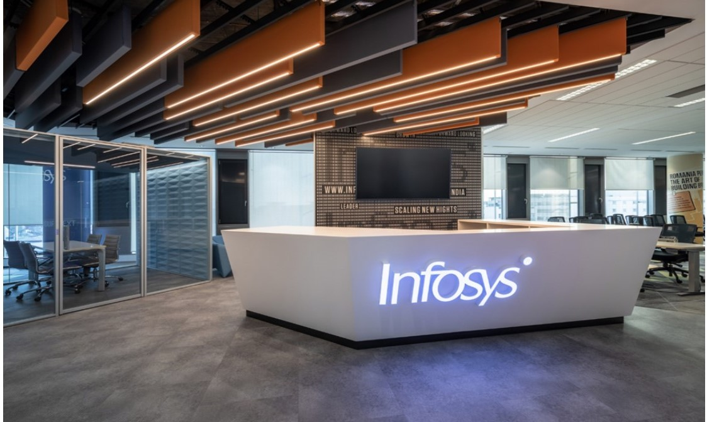

|  |
Info:
Infosys is a global leader in next-generation digital services and consulting.
We enable clients in more than 50 countries to navigate their digital transformation.
With over four decades of experience in managing the systems and workings of global enterprises,
we expertly steer our clients through their digital journey. We do it by enabling the enterprise
with an AI-powered core that helps prioritize the execution of change. We also empower the
business
with agile digital at scale to deliver unprecedented levels of performance and customer delight.
Our always-on learning agenda drives their continuous improvement through building and
transferring digital
skills,
expertise, and ideas from our innovation ecosystem.
| Founded : |
2 July 1981; 40 years ago |
| Founder : |
N. R. Narayana Murthy
Nandan Nilekani
S. Gopalakrishnan
S. D. Shibulal
K. Dinesh
N. S. Raghavan
Ashok Arora
|
| Type : |
Service Based |
| Key people : |
Nandan Nilekani
(Chairman)
Salil Parekh
(MD & CEO)
U. B. Pravin Rao
(COO)
|
|
Hiring Process:
To get into Infosys you need to crack infytq
About infytq
Infosys InfyTQ test is a specialized credential that confirms your industry readiness and helps you to
pursue your chosen career path. Your programming and database knowledge will be put to the test in this
certification test.
after passing the exam, you will be designated as an "Infosys Certified Software Programmer" and you
will
get a chance to attend an Infosys interview for the position of Systems Engineer.
You will be designated as an "Infosys Certified Software Programmer" after passing the exam, and you
will
get a chance to attend an Infosys interview for the position of Systems Engineer.
Infosys hires for following profiles:
-
System Engineer : 3.5 LPA
-
Digital Specialist Engineer : 6.5 LPA
-
Specialist Programmer : 9.5 LPA
InfyTQ :Certification round
- It's Duration will be 3 hours
- It consists of two componets-Hands-on(2 questions it covers Programming fundamentals) and
Objective(MCQ)(20 questions based on OOPS concepts,data structures and database)
- The allowed languages for infytq are Java and Python
- On scoring 65% or more in the Certification round and after going through the necessary checks, you
will
become eligible to appear in the Advantage Round and you will get interview call for System Engineer
role
HackWithInfy and Advantage Round
- Advantage Round: This is an optional round for those who clear the Certification
Round
to gain an
advantage and win a job opportunity for niche technical roles of Specialist Programmer and Digital
Specialist Engineer at Infosys. If you decide to go through this round, you will have to take a test
that will assess your programming and other technical skills. You will have the option to take this
test
in a programming language from multiple options. If you clear the round, you will receive a
pre-placement interview opportunity for the Specialist Programmer and the Digital Specialist
Engineer
role and become an Infosys Certified Software Programmer. It will be a virtual interview that will
assess your technical and behavioral skills.
In case, you do not opt/clear the Advantage Round, you will get an opportunity to appear for the
technical interview for the Systems Engineer Role and become an Infosys Certified Software
Programmer
based on your performance in the technical interview.
- HackWithInfy: Hackwithinfy is a coding competition for engineering students
graduating
in the year 2023, 2024 and 2025 across India. The program is specially designed to inculcate the
culture
of rapid problem-solving and innovative thinking early in academic life.
HackWithInfy provides the perfect stepping-stone for students to explore their interest in
programming
and an opportunity to compete and win exciting prizes. The top performers will be entitled to cash
prize
worth INR3,50,000 , chance to work with Infosys, paid internship opportunities and a chance to
become
our campus ambassadors.
There will be 3 coding(medium to hard level) questions in this
competition/Round if on successful completion of 1 , 1 & half, 2 & half questions you will get interview
call for DSE or SP roles based on your performance
Interview Experience